CS184 Final Project Report: Core-Collapse Supernova Simulator
Abstract
Our project was to make a simulator of a supernova, specifically a core-collapse supernova. In the core-collapse mechanism, a star loses its expansive energy through nuclear fusion and collapses into itself due to gravity. The inward build-up of pressure leads to the explosion. We wanted to show the main post-bounce stages, specifically after the star's core has collapsed and rebounded, launching a shockwave outward. The shock launches, stalls, gets revived by neutrino heating, forms hot plumes, and finally breaks out unevenly. We began with the 2D simulator from our milestone and extended the dynamics to 3 dimensions. Finally, we made a small browser viewer with interactivity, so you can rotate around the saved simulation and move through time. Our code uses a bunch of heuristics to get a reasonable-looking supernova effect and is not by any means a full astrophysical simulation, but we are still happy with the results!
Technical Approach
The Physics Model
As mentioned in the milestone, supernova dynamics and were pretty new to us. We read a bunch of papers and then settled on a post-bounce model. In this model, we do a fluid simulation where the center acts like a proto-neutron star, which is the tiny dense object left in the middle right after collapse. So that we don't have to model the actual core collapse dynamics, we start our simulation after the shock has already launched. The part we care about is "after bounce," where the shock, heating, cooling, and plumes are important to model.
The state of our dynamical simulation includes a density field, entropy field, velocity field, and tracer positions. The white dot tracers are physically meaningless and massless "marker" particles that exist to show the flow of the star fluid.
The way we simulate the shock is still similar to the milestone we did. The shock is the outward-moving pressure wave that starts the explosion. We hardcode the rough shock radius over time, where the radius is just how far the shock is from the center. It grows outward, stalls for a bit, and then keeps going after the revival -we hardcode the stall to simulate this effect. In 3D, we also let the entropy field deform the shock surface locally, which gives the shock a mch more uneven shape.
The shock shell is the thin area around the shock surface. It divides the grid into different regions. Outside the shock, the fluid evolves with the normal fluid update. Near the shock and gain region, we add heating to represent neutrino energy being deposited back into the star. The gain region is the area where the fluid gains energy from neutrino heating. Closer to the center, we remove some entropy to represent cooling. The heating also varies by angle, which helps break the symmetry and makes the plumes more interesting. All in all, these effects of manually reducing and increasing heat in certain regions is a highly simplisitc heuristic on our part, but we found this improves the visual quality of the simulations.
The velocity update has a few main forces. We have inward gravity from the center, buoyancy from hot high-entropy fluid, a shock push around the shock shell, and in 3D a swirl/outflow term that bends the flow away from only being radial. This buoyancy provides the effect of "rising plumes" and pushes the shock into the uneven shapes.
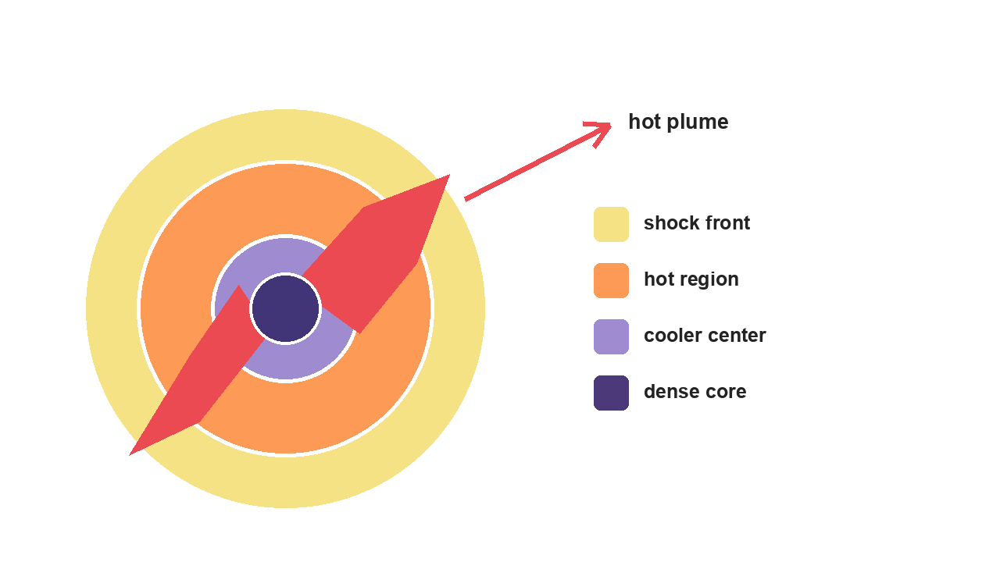
For moving density and entropy forward, we use semi-Lagrangian advection. The basic idea is that for each grid cell, we look backward along the velocity field and sample the old value from there. Semi-Lagrangian advection is the backwards lookup trick that makes the update of density and entropy stable - for this, we used the formulas that we discussed in lecture!! The white dot tracers are moved by sampling the velocity where they are and taking a simple Euler step.
Going from 2D to 3D
We originally settled for a 2D fluid simulation, imagining the star as a cylinder and the shockwave as a circle expanding outwards. After getting our 2D simulation working pretty well (we have some preliminary results in our milestone report), we extended the update dynamics to 3D. The 3D version adds a few extra controls: a preferred direction for the explosion and a swirl direction as well as a deterministic plume seed. The plume seed is a fixed pattern from sine waves which provides even more breaking of radial symmetry, giving us the unevenness.
Rendering
For 2D rendering, we combine a few fields into one image. Entropy gives the red/yellow hot-looking colors, heating adds blue/green, and entropy gradients make the plume boundaries look more pronounced (entropy gradients show how quickly entropy changes from one place to the next). We also draw the shock as a white outline and scatter the tracer particles on top.
For 3D rendering, we stack slices of the 3D grid from back to front and blend them onto the image. At first we made dense regions opaque, but that looked terrible because it became one smooth glowing ball. What actually looks good is showing the plume edges, the heated region, and the shock shell. After that, we add some rim lighting around the edge, plus color tinting and a star field so the final frames are easier to read.
We also added camera paths for videos. One annoying bug was that the camera used the raw solver step even though we saved every 4th frame, which led to the camera randomly jumping in the video. The fix was to move the camera based on the output frame number instead.
Problems we ran into
Radial symmetry: In our first implementation, our simulator was just a clean expanding circle/sphere, and this is because there was almost full radial symmetry in any of our dynamics. This of course is not what happens in a real supernova. To fix this, we added explicit angular heating patterns and plume seeds so some parts of the shock get pushed more than others, which motivated the sinusoidal patterns discussed above.
Our first 3D render made opacity depend on density and ended up looking kinda like a glowing blob. The whole image turned into a smooth orange ball, and all the actual plume detail disappeared. We changed opacity to depend more on plume boundaries, heating, and the shock band, which made the structure show up.
As discussed before, in our initial video implementation we had some weird camera jumps where our camera would snap during view transitions. Specifically, we noticed that every time we made a video, the camera snapped around frame 76 to 80. It took us a while to figure out, but the issue was just that the camera was using the wrong frame counter. It was using solver steps instead of saved output frames, and changing this solved the issue.
Lessons learned
Coming into this project, none of us knew much about supernova physics. We spent a while reading papers on core-collapse supernovae to understand this actual physics before writing any code. The central challenge in real supernova theory is the shock revival problem: a shockwave launches outward from the rebounding core, quickly stalls at a few hundred kilometers as it loses energy to neutrino emission, and then somehow has to be revived. The mechanism that actually revives it is neutrino heating in the gain region. This then drives convection, which feeds the Rayleigh-Taylor and SASI (Standing Accretion Shock Instability) instabilities that break spherical symmetry and push the shock into the uneven plume-covered shape you see in real simulations. It was understanding this chain of stall, neutrino heating, convective instability, and shock revival that allowed us to create a simplified model of the dynamics by adding heuristics to model each of these individual steps. If we really wanted to simulate neutrino transport entirely (solve Boltzmann equation for billions of neutrinos), this would be a huge HPC problem. In summary, our simplifying components were:
- Having a hardcoded shock radius: Instead of computing the shock position from pressure and density evolution, we just hardcode its outwards trajectory through time, having it move outwards, then stall, then revive. Obviously this is a huge shortcut, but not having to worry about the shock radius evolution instead let us focus on what happens around the shock as opposed to simulating the shock front from first principles.
- Janky heuristic neutrino heating and cooling: the real neutrino transport that defines local heating/cooling rates are based on a bunch of other factors (neutrino luminosity, opactiy, etc) that was once again too hard for us to model from scratch. Instead, we just replaced this with a much simpler spatial rule, to add entropy near the gain region, and remove it closer to the center that's already cooled down. Then, the angular variation we introduced on top of that to get our asymmetry in the plumes is not physically motivated at all, and instead just a sort of hacky way to arrive at the same convective instabilities that would emerge from a real simulation. The mechanism might be "wrong," but the visual outcome, which is hot plumes rising through the shock into uneven shapes, is qualitatively correct because the underlying instability is still real.
- Semi-Lagranigan advection: In reality, we would have to solve the entire compressible Navier-Stokes equations for our supernova simulation, which would be fried. Instead, we decided to use semi-Lagrangian advection as covered in class, ignoring compressibility and remaining numerically cheap so we could iterate faster on our ideas.
Results
2D Baseline
This is our 2D baseline run on a 192x192 grid. You can see the shock launch, stall around t=0.72s, and then start expanding again once the heating kicks in. By the last frame, the plume structure is pretty clear. Red/yellow is entropy, blue/green is heating, and the lighter edges are plume boundaries.
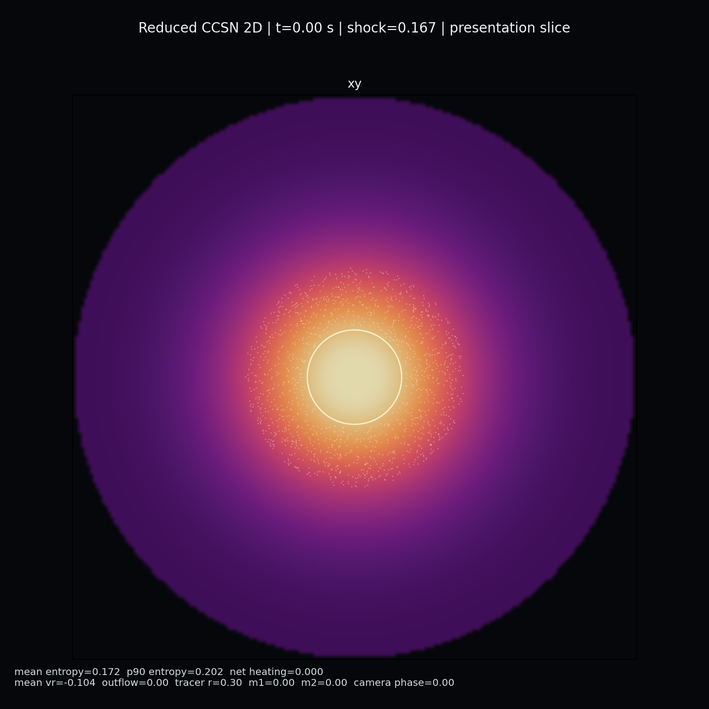

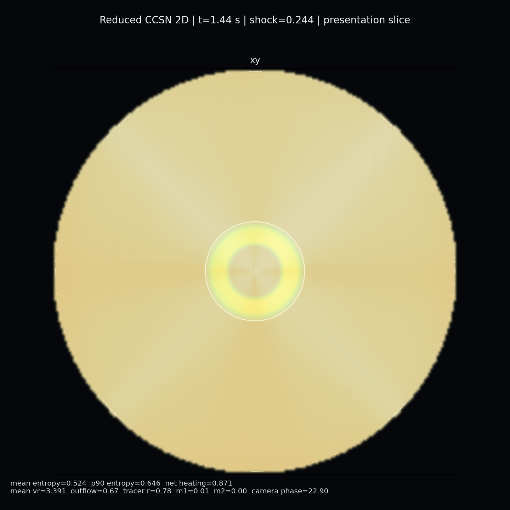
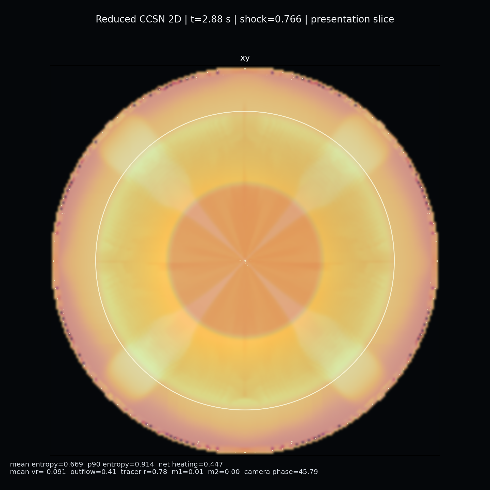
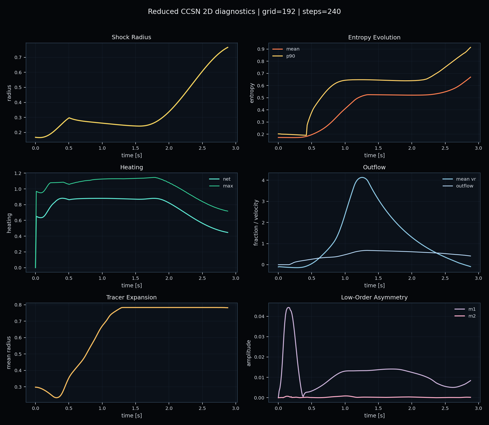
The diagnostics show the same thing in plot form. The shock radius stalls and then revives, and the asymmetry plots grow as the plumes break out.
3D
This is the main 3D run we wanted to show. It runs on a 72³ grid and uses a tilted axis, stronger asymmetry, swirl, and late outflow. The tilted axis is the direction the explosion prefers to stretch along. The big panel is the 3D-looking render. The smaller panels are slices through the grid, which helped us debug what was happening inside.
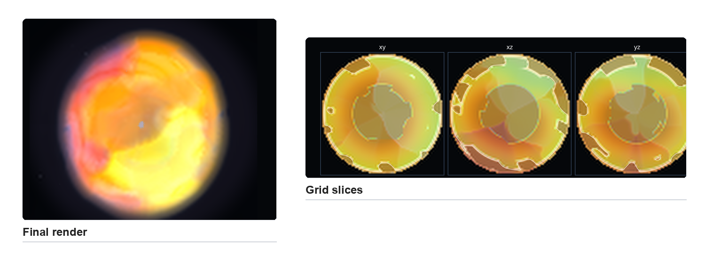
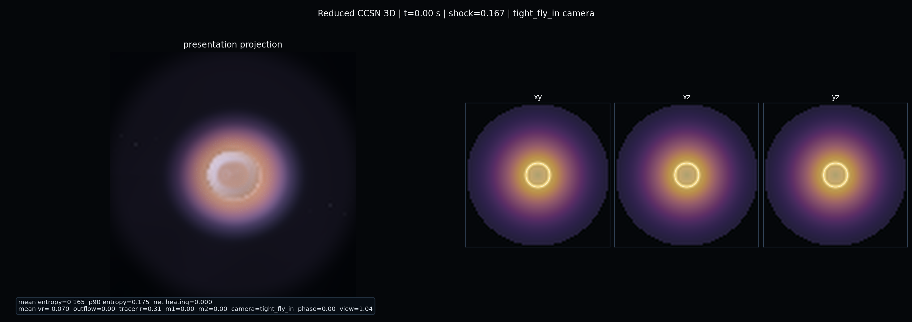
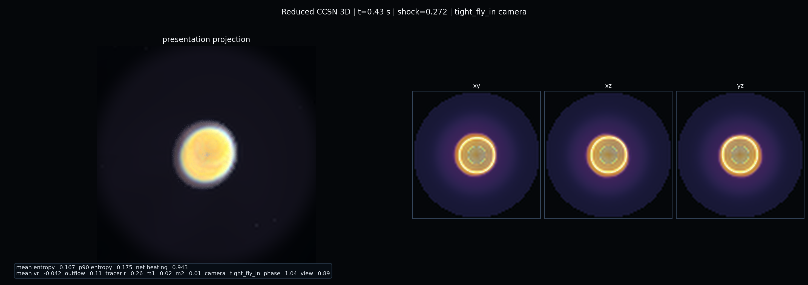
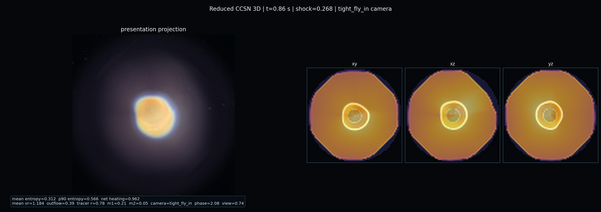
Explosive Preset
When we visualized our 3D simulation in the interactive viewer, we saw that it looked a bit blobby and not like the sort of supernova you might expect from animations/photos online. TO try and get something closer to that, we made an "explosive" preset, which revives the shock faster, lowers boundary damping, and tilts the preferred axis more strongly.
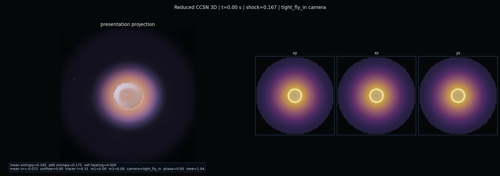
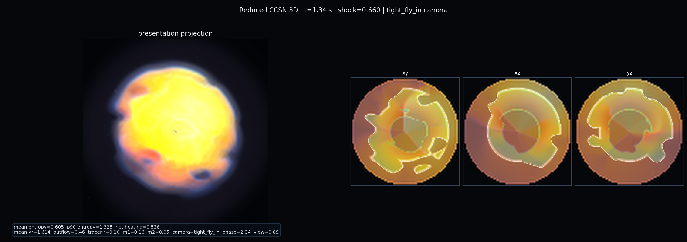
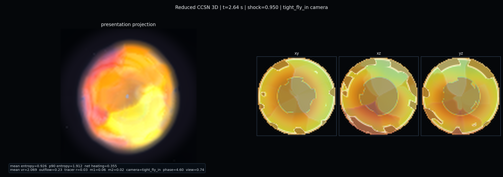
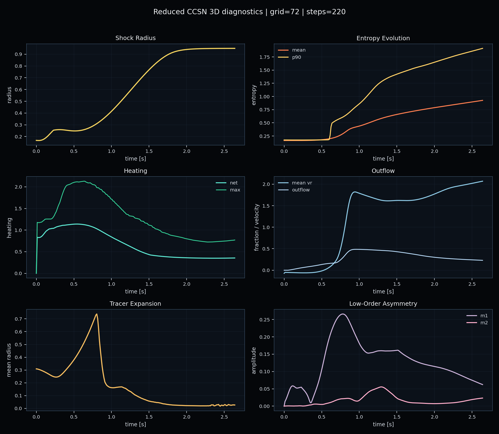
The explosive diagnostics show what we expected: faster shock revival, higher peak entropy, and more outflow than the baseline.
Interactive Web Viewer (play around with it!!)
As our final step, we made an interactive Three.js viewer. We export saved snapshots to JSON and load them in the browser. The interactive view allows you to rotate around the supernova, move through time with a slider, and switch between the multiple views of both the volume and plume particles, tracer particles, or just the volume. We think it came out really nice!
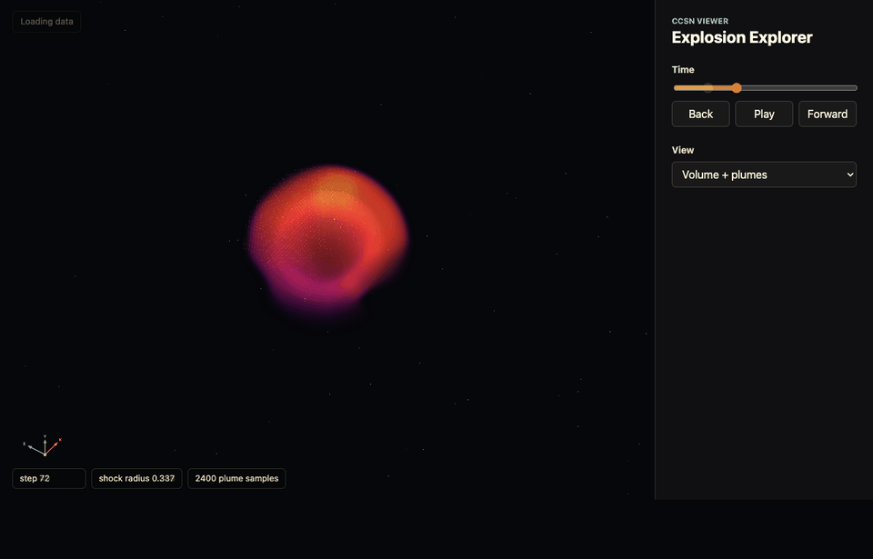
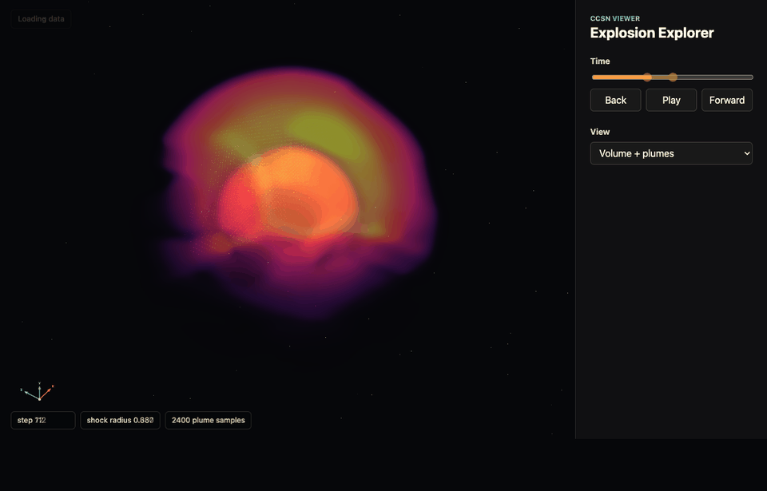
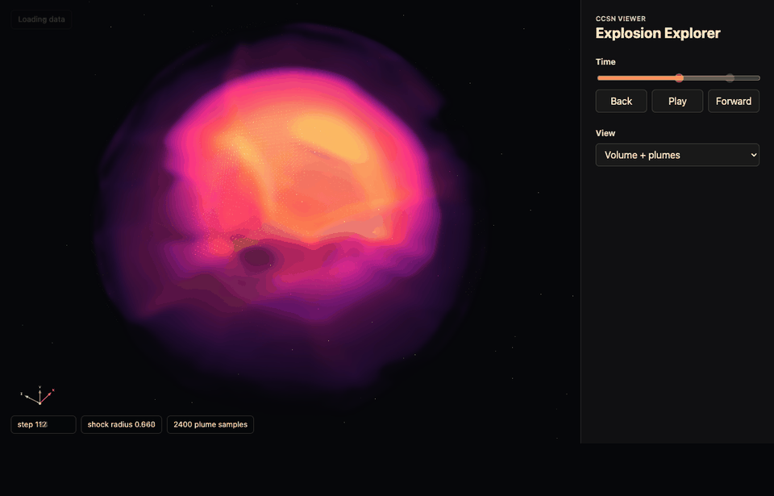
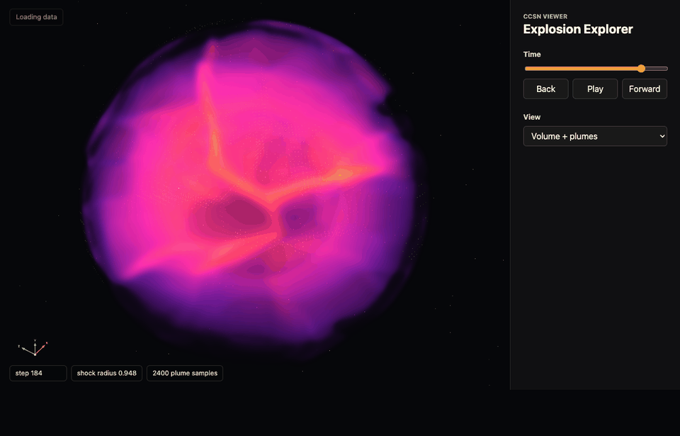
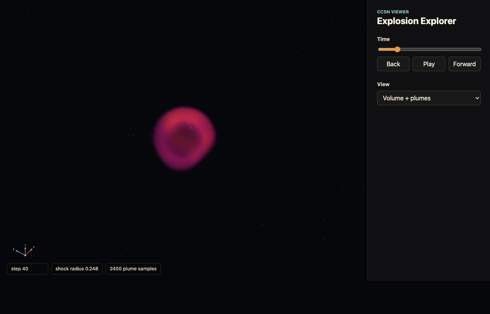
References
- CS 184 course slides (especially the fluid simulation lecture)
- Burrows & Vartanyan, "Core-collapse supernova explosion theory", Nature, 2021.
- Burrows et al., "Crucial Physical Dependencies of the Core-Collapse Supernova Mechanism", Space Science Reviews, 2018.
- Janka, "Explosion Mechanisms of Core-Collapse Supernovae", Annual Review of Nuclear and Particle Science, 2012.
- Three.js docs
Contributions from each team member
We all got on call and in person to pair program since this worked well for past classes. Here's what we focused on during our sessions:- Kailash Ranganathan: Physics Model, 2D milestone, 2D->3D improvements
- Anirudh Kotamraju: Physics Model, 2D milestone, interactive web viewer
- Shaoyuan Gao: Literature review, initial advection simulator, parameter tuning